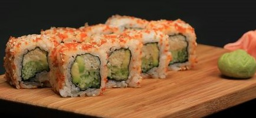

My Hobbies
- I love cooking and love to eat different cuisine. My favourite food are Nepalese and Japanese cuisine.
- I love travelling to new places. So far, I have travelled to 15 countries and have plenty more in my bucket list. Top three places I loved so far are:
- I love to read Novel in my free time. Currently, I am reading 21 Lessons for the 21st Century by Yuval Noah Harari.
- I love to watch documentary series mostly crime-thriller genre.
- Since this pandemic, I have added one more activitiy in my hobby list which is exercises, As I am really bad at controlling diet, I started exercsising at least 6 times a week, 30 mins a day consisting of cardio, HIIT or Yoga routine.
Home